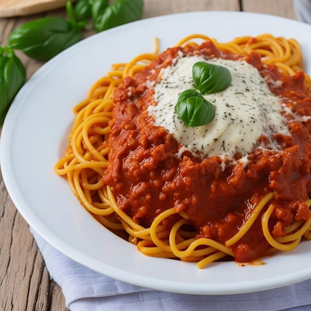

Pasta Recipe

This homemade pasta recipe is consistently great and easy to make with
flour, eggs, salt, olive oil, and water. Roll out by hand or use a pasta
machine to cut dough into desired pasta shape.
Ingredients
- 2 cups Flour
- 1 Whole Egg
- 2 tablespoon oil
- 1 teaspoons salt
- 1/2 cup water
Directions
- Make the dough.
- Turn the dough out and knead it for 10 minutes.
- Let the dough rest.
- Divide the dough into balls.
-
Use a pasta machine to roll and cut the dough into desired shapes.
-
Bring a large pot of generously salted water to a boil, add the uncooked
pasta, and stir.